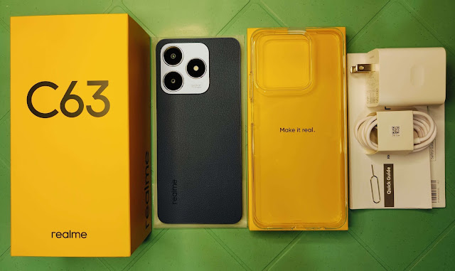

Realme Note 50 vs Realme C63: qual vale mais a pena em 2026?
O Realme Note 50 e o Realme C63 são duas opções de entrada da Realme que competem diretamente com o Samsung Galaxy A07. Abaixo, veja a ficha técnica e a análise de cada um para decidir qual combina melhor com o seu uso do dia a dia.
Realme Note 50
O Realme Note 50 é um smartphone de entrada com design ultrafino, tela grande de 90 Hz e bateria de longa duração. Uma opção simples e direta para quem quer um celular funcional sem gastar muito.
Especificações técnicas
- Processador: Unisoc Tiger T612 (12nm), até 1.8 GHz
- RAM: 3 GB / 4 GB
- Armazenamento: 64 GB / 128 GB (expansível via microSD)
- Tela: 6,74" IPS LCD, 720 x 1600 px (HD+), 90 Hz
- Câmera traseira: 13 MP (principal) + sensor auxiliar de IA
- Câmera frontal: 5 MP
- Bateria: 5.000 mAh, carregamento 10W
- Sistema operacional: Android 13 (Realme UI T)
- Marca: Realme
Vale a pena comprar o Realme Note 50?
Sim, o Realme Note 50 é uma boa escolha para quem quer um celular simples e funcional, na mesma faixa de preço do Galaxy A07. A tela de 6,74 polegadas com 90 Hz entrega uma navegação fluida, e a bateria de 5.000 mAh aguenta o dia todo de uso moderado. O ponto fraco é o carregamento de apenas 10W, bem mais lento que o de outros modelos da categoria. Para quem busca um aparelho de entrada simples e não se importa de carregar por mais tempo, é uma recomendação tranquila.
Realme C63

O Realme C63 é a versão mais atual e robusta da dupla, com Android 14, carregamento mais rápido e resistência a poeira e respingos. Uma opção um pouco mais cara, porém com mais recursos modernos.
Especificações técnicas
- Processador: Unisoc Tiger T612 (12nm), até 1.8 GHz
- RAM: 6 GB / 8 GB
- Armazenamento: 128 GB / 256 GB (expansível)
- Tela: 6,75" IPS LCD, 720 x 1600 px, 90 Hz
- Câmera traseira: 50 MP + lente auxiliar com IA
- Câmera frontal: 8 MP
- Bateria: 5.000 mAh, carregamento 45W
- Sistema operacional: Android 14 (Realme UI 5.0)
- Resistência: Certificação IP54 (poeira e respingos)
- Marca: Realme
Vale a pena comprar o Realme C63?
Sim, o Realme C63 é mais robusto e vale o investimento extra para quem quer mais durabilidade e desempenho. O carregamento de 45W é bem mais rápido, o Android 14 traz atualizações mais recentes e a certificação IP54 protege contra poeira e respingos de água — algo raro nessa faixa de preço. Se o orçamento permitir, o C63 é a escolha mais segura a longo prazo.
Qual escolher: Note 50 ou C63?
Se o preço for o fator decisivo, o Realme Note 50 é a opção mais barata e mantém o essencial: tela grande de 90 Hz e bateria de longa duração, ficando na mesma faixa de preço do Galaxy A07. Já o Realme C63 compensa um valor maior com mais RAM, câmera melhor, carregamento mais rápido e resistência à poeira e respingos. Para quem compara com o Samsung Galaxy A07, ambos os modelos da Realme se destacam pela tela com 90 Hz, algo que o A07 não oferece.